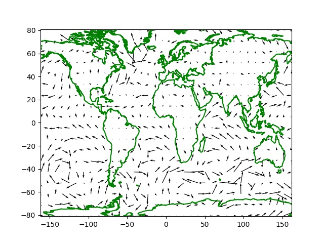

Meteoroloji Verileri - ECMWF, NOAA, OpenWeatherMap
OpenWeatherMap
Bu Web servisi kayıt olanlara bir API anahtarı verir ve belli sayıda APİ çağrısı için kullanım bedavadır. Servisten o andaki sıcaklık, rüzgar, nem vs gibi verileri alabiliriz, ayrıca bu veriler için tahminler de aynı API üzerinden paylaşılıyor [2,3].
Kullanım şartlarına [1] baktığımızda bedava seçenek için,
60 calls/minute
1,000,000 calls/month
Current Weather
Minute Forecast 1 hour*
Hourly Forecast 2 days*
Daily Forecast 7 days*
National Weather Alerts*
Historical weather 5 days*
Climatic Forecast 30 days
servislerini görüyoruz, bir dakikada 60 çağrı, her ay 1 milyon çağrı yapabiliyoruz bu durumda, bu çoğu geliştirici için yeterli olmalı. Tabii OWM üzerinden başkalarına servis sağlamak isteyenler daha fazla erişime ihtiyaç duyabilir, onlar için farklı planlar var.
Yazının geri kalanında bu anahtarı aldığınızı, ve anahtarın .key
adlı bir dosyada olduğunu farzediyoruz (dikkat, bu anahtar kodda olsa
key='ASDFASDF' gibi gözükecek bir şey, eğer dosya içine koyarsak son
satır -newline- olmadan dosyaya yazmak gerekir),
import requests, json
lat,lon = 41.969901,29.070148
base_url = 'http://api.openweathermap.org/data/2.5/weather?'
weatherapi = open(".key").read()
payload = { 'lat': str(lat), 'lon': str(lon), 'units': 'metric', 'APPID': weatherapi }
r = requests.get(base_url, params=payload)
res = []
for x in r.iter_lines():
x = json.loads(x.decode())
res.append (x['wind'])
print ('json',res)
print ('hiz', res[0]['speed'])
print ('yon', res[0]['deg'])
json [{'speed': 8.92, 'deg': 214}]
hiz 8.92
yon 214
Üstte lat,lon enlem ve boylamlarındaki o andaki rüzgar hızı ve
yönünü aldık.
Not: Rüzgar acısı meterolojik, ya da coğrafik acı denen şekilde, meteroloji dünyasında kuzeye göre rüzgarın nereden geldiği raporlanıyor, acılar ona göre ayarlanıyor, kuzeyden güneye doğru esen, yani tam güneyi gösteren açı sıfır, saat yönüne doğru artıyor. Aritmetik acılar farklı tabii, orada saat yönü tersinde artış ve tam sağ / doğu yönde sıfır. Aradaki değişim için,
def geo2arit(geo):
if geo==360: geo=0
if (geo>=0.0) & (geo <90.0): return 270.0-geo
elif (geo>=90.0) & (geo<180.0): return 180.0-(geo-90)
elif (geo>=180.0) & (geo<270.0): return 90.0-(geo-180)
elif (geo>=270.0) & (geo<360.0): return 360.0-(geo-270)
şeklinde bir çevirici kod yazılabilir.
print (geo2arit(90))
print (geo2arit(0))
print (geo2arit(80))
180.0
270.0
190.0
Daha fazla meteorolojik bilgi 'main' anahtarı içinde,
r = requests.get(base_url, params=payload)
res = []
for x in r.iter_lines():
x = json.loads(x.decode())
res.append (x['main'])
for x in res: print (x)
{'temp': 12.36, 'feels_like': 5.71, 'temp_min': 12.36, 'temp_max': 12.36, 'pressure': 1015, 'humidity': 76, 'sea_level': 1015, 'grnd_level': 1015}
Tahminler için farklı bir URL / API gerekiyor, mesela rüzgar yönü ve yağmur için,
base_url = 'http://api.openweathermap.org/data/2.5/forecast?'
payload = { 'lat': str(lat), 'lon': str(lon), 'units': 'metric', 'APPID': weatherapi }
r = requests.get(base_url, params=payload)
wind = []
rain = []
for x in r.iter_lines():
x = json.loads(x.decode())
for i,xx in enumerate(x['list']):
wind.append((xx['dt_txt'], xx.get('wind') ))
rain.append((xx['dt_txt'], xx.get('rain') ))
print ('ruzgar')
for i in range(5):
print (wind[i])
print ('yagmur')
for i in range(5):
print (rain[i])
ruzgar
('2021-01-07 12:00:00', {'speed': 10.21, 'deg': 211})
('2021-01-07 15:00:00', {'speed': 9.37, 'deg': 213})
('2021-01-07 18:00:00', {'speed': 5.15, 'deg': 250})
('2021-01-07 21:00:00', {'speed': 2.69, 'deg': 25})
('2021-01-08 00:00:00', {'speed': 4.66, 'deg': 55})
yagmur
('2021-01-07 12:00:00', None)
('2021-01-07 15:00:00', None)
('2021-01-07 18:00:00', None)
('2021-01-07 21:00:00', {'3h': 0.17})
('2021-01-08 00:00:00', {'3h': 1.08})
Nem ve sicaklik verilerini alalim, onları önceden rasgele seçilmiş
belli noktalar için alacağız, util.coords içinde. Bugünün verisini
alalım, erişim için OWM anahtarının alınmış olduğunu farzediyoruz,
bizimki $HOME altında .nomterr.conf adlı bir JSON dosyasında,
weatherapi anahtarına tekabül ediyor,
base_url = 'http://api.openweathermap.org/data/2.5/weather?'
params = json.loads(open(os.environ['HOME'] + "/.nomterr.conf").read())
n = datetime.datetime.now()
ns = n.strftime("%Y-%m-%d")
hums = []
for i in range(len(coords)):
print (i)
payload = {'units': 'metric', 'lat': str(coords[i][0]), 'lon': str(coords[i][1]),'appid': params['weatherapi'] }
r = requests.get(base_url, params=payload)
res = [json.loads(x.decode()) for x in r.iter_lines()]
hums.append(str(res[0]['main']['humidity']))
hline = ns + "," + ",".join(hums)
fout = open("trhumid.csv","a")
fout.write(hline)
fout.write("\n")
fout.close()
ECMWF
Önce günlük, bedava kaynaklara bakalım. Kurulmasi gereken paketler,
ecmwf-data ecmwf-opendata magpye
Örnek kod, [7] adresinden,
import ecmwf.data as ecdata
from magpye import GeoMap
from ecmwf.opendata import Client
client = Client("ecmwf", beta=True)
parameters = ['10u', '10v','2t']
filename = '/tmp/medium-2t-wind.grib'
client.retrieve(
date=0,
time=0,
step=12,
stream="oper",
type="fc",
levtype="sfc",
param=parameters,
target=filename
)
data = ecdata.read(filename)
t2m = data.select(shortName= "2t")
u = data.select(shortName= "10u")
v = data.select(shortName= "10v")
print (u.values())
print (u.latitudes())
print (u.longitudes())
[-4.91452026 -4.91452026 -4.91452026 ... -4.35202026 -4.35202026
-4.35202026]
[ 90. 90. 90. ... -90. -90. -90.]
[-180. -179.6 -179.2 ... 178.8 179.2 179.6]
Grafiklemek
Üstteki verileri grafiklemek istersek alınan enlem, boylam verisini
aradeğerleme kaynağı olarak kullanmak gerekli, aradeğerleme hedefi
bizim tanımladığımız izgara olacak, bu izgara üzerinde quiver
çağrısı işletilebilir,
from scipy.interpolate import NearestNDInterpolator
import ecmwf.data as ecdata
from magpye import GeoMap
from ecmwf.opendata import Client
import pandas as pd
import simplegeomap as sm
import numpy as np
import matplotlib.pyplot as plt
client = Client("ecmwf", beta=True)
parameters = ['10u', '10v','2t']
filename = '/tmp/medium-2t-wind.grib'
client.retrieve(
date=0,
time=0,
step=12,
stream="oper",
type="fc",
levtype="sfc",
param=parameters,
target=filename
)
data = ecdata.read(filename)
t2m = data.select(shortName= "2t")
u = data.select(shortName= "10u")
v = data.select(shortName= "10v")
M,N = 40,20
lons = u.longitudes()
lats = u.latitudes()
udata = u.values()
xi = np.linspace(min(lons), max(lons), M)
yi = np.linspace(min(lats), max(lats), N)
Xi, Yi = np.meshgrid(xi, yi)
interp = NearestNDInterpolator(list(zip(lons,lats)), udata)
uzi = interp(Xi, Yi)
lons = v.longitudes()
lats = v.latitudes()
vdata = v.values()
xi = np.linspace(min(lons), max(lons), M)
yi = np.linspace(min(lats), max(lats), N)
Xi, Yi = np.meshgrid(xi, yi)
interp = NearestNDInterpolator(list(zip(lons,lats)), vdata)
vzi = interp(Xi, Yi)
fig, ax = plt.subplots()
sm.plot_continents(0,0,18,incolor='green', outcolor='white', fill=False,ax=ax)
ax.quiver(xi,yi,uzi,vzi)
plt.savefig('ecmwf1.jpg')

Hava verisi uzerinde yapay ogrenim ile tahminler yapmak isteyenler ham veriyi almak icin alttaki siteye basvurabilir.
https://www.ecmwf.int/
Bu bir Avrupa bilim organizasyonu, ayrica hava tahmini modellerini isletip tahmin de uretiyorlar (Harvey kasirgasinin nereye vuracagini ABD NOAA'dan daha iyi tahmin ettiler). Python ile veri indirmek mumkun,
sudo pip install ecmwf-api-client
Burada "Register" ile kullanici bilgileri, email, vs. verilip kaydolunur. Bir aktivasyon email'i sonra bir tane daha email geliyor, ve kayit bitiyor. Login yapilir. Simdi API'ye erismek icin anahtar lazim,
https://api.ecmwf.int/v1/key/
Burada gosterilen
{
"url" : "https://api.ecmwf.int/v1",
"key" : "[ANAHTAR]",
"email" : "[email]"
}
formundaki anahtar $HOME/.ecmwfapirc dosyasina yazilir.
Verilere erismeden once veri turune gore bazi lisans sayfalarinda bir lisans kabuluna "evet" demek gerekiyor, mesela alttaki tur bir script icin
from ecmwfapi import ECMWFDataServer
server = ECMWFDataServer()
server.retrieve({
'dataset' : "tigge",
'step' : "24/to/120/by/24",
'number' : "all",
'levtype' : "sl",
'date' : "20071001/to/20071003",
'time' : "00/12",
'origin' : "all",
'type' : "pf",
'param' : "tp",
'area' : "70/-130/30/-60",
'grid' : "2/2",
'target' : "data.grib"
})
[5] lisansına evet demiş olmak lazım. Bir tane daha [6].
Eger lisans kabul edilmemisse hata mesaji hangi sayfaya gidilecegini soyler.
NOAA
[4] adresinde gunluk dosyalar var.
Yapay Ogrenim
Hava tahmini icin gunluk (saatlik, vs) hava verisi cok boyutlu bir zaman serisi olarak gorulebilir, mesela her t aninda sicaklik, nem, ruzgar hizi cok boyutlu bir zaman serisi olarak geliyor, egitim icin N tane gorulen veri kullanilir, bu veri N+1, N+2, . anlarindaki gelecek zaman serisini tahmin icin kullanilir. Bu sekilde hava tahmininin ornegi alttaki kodlarda bulunabilir,
https://github.com/mouradmourafiq/tensorflow-lstm-regression/blob/master/lstm_weather.ipynb
Kaynaklar
[1] https://openweathermap.org/price
[2] https://openweathermap.org
[3] https://openweathermap.org/api
[4] https://www.ncdc.noaa.gov/orders/qclcd/
[5] http://apps.ecmwf.int/datasets/licences/tigge/
[6] http://apps.ecmwf.int/datasets/licences/general
[7] https://github.com/ecmwf/notebook-examples/blob/master/opencharts/medium-2t-wind.ipynb
Yukarı